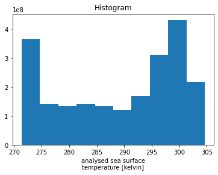
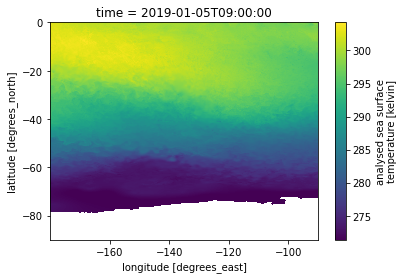
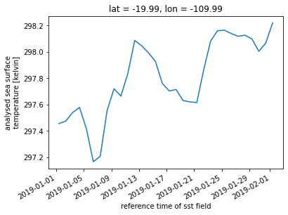

#https://ghrc.nsstc.nasa.gov/opendap/globalir/data/2020/0525/globir.20146.0000
from netCDF4 import Dataset
import xarray as xr
import dask
import os
import requests
#Allows us to visualize the dask progress for parallel operations
from dask.diagnostics import ProgressBar
ProgressBar().register()OPeNDAP Access
Notebook Objectives:
- Search the common metadata repository (CMR) for the MUR dataset
- Obtain OPeNDAP links from CMR search
- Download data from OPeNDAP links and open via xarray to visualize data
Before you start
Before you beginning this tutorial, make sure you have an account in the Earthdata Login, which is required to access data from the NASA Earthdata system. Please visit https://urs.earthdata.nasa.gov to register for an Earthdata Login account. It is free to create and only takes a moment to set up.
You will also need a netrc file containing your NASA Earthdata Login credentials in order to execute this notebook. A netrc file can be created manually within text editor and saved to your home directory. For additional information see: Authentication for NASA Earthdata
In this notebook, we will be calling the authentication in the below cell, a work around if you do not yet have a netrc file.
import urllib
from urllib import request, parse
from http.cookiejar import CookieJar
import json
import getpass
import netrc
def setup_earthdata_login_auth(endpoint):
"""
Set up the request library so that it authenticates against the given Earthdata Login
endpoint and is able to track cookies between requests. This looks in the .netrc file
first and if no credentials are found, it prompts for them.
Valid endpoints include:
urs.earthdata.nasa.gov - Earthdata Login production
"""
try:
username, _, password = netrc.netrc().authenticators(endpoint)
except (FileNotFoundError, TypeError):
# FileNotFound = There's no .netrc file
# TypeError = The endpoint isn't in the netrc file, causing the above to try unpacking None
print('Please provide your Earthdata Login credentials to allow data access')
print('Your credentials will only be passed to %s and will not be exposed in Jupyter' % (endpoint))
username = input('Username:')
password = getpass.getpass()
manager = request.HTTPPasswordMgrWithDefaultRealm()
manager.add_password(None, endpoint, username, password)
auth = request.HTTPBasicAuthHandler(manager)
jar = CookieJar()
processor = request.HTTPCookieProcessor(jar)
opener = request.build_opener(auth, processor)
request.install_opener(opener)
edl="urs.earthdata.nasa.gov"
setup_earthdata_login_auth(edl)Please provide your Earthdata Login credentials to allow data access
Your credentials will only be passed to urs.earthdata.nasa.gov and will not be exposed in JupyterUsername: nickles
···········#CMR Link to use
#https://cmr.earthdata.nasa.gov/search/granules.umm_json?collection_concept_id=C1625128926-GHRC_CLOUD&temporal=2019-01-01T10:00:00Z,2019-12-31T23:59:59Z
r = requests.get('https://cmr.earthdata.nasa.gov/search/granules.umm_json?collection_concept_id=C1996881146-POCLOUD&temporal=2019-01-01T10:00:00Z,2019-02-01T00:00:00Z&pageSize=365')
response_body = r.json()od_files = []
for itm in response_body['items']:
for urls in itm['umm']['RelatedUrls']:
if 'OPeNDAP' in urls['Description']:
od_files.append(urls['URL'])
od_files
['https://opendap.earthdata.nasa.gov/providers/POCLOUD/collections/GHRSST%20Level%204%20MUR%20Global%20Foundation%20Sea%20Surface%20Temperature%20Analysis%20(v4.1)/granules/20190101090000-JPL-L4_GHRSST-SSTfnd-MUR-GLOB-v02.0-fv04.1',
'https://opendap.earthdata.nasa.gov/providers/POCLOUD/collections/GHRSST%20Level%204%20MUR%20Global%20Foundation%20Sea%20Surface%20Temperature%20Analysis%20(v4.1)/granules/20190102090000-JPL-L4_GHRSST-SSTfnd-MUR-GLOB-v02.0-fv04.1',
'https://opendap.earthdata.nasa.gov/providers/POCLOUD/collections/GHRSST%20Level%204%20MUR%20Global%20Foundation%20Sea%20Surface%20Temperature%20Analysis%20(v4.1)/granules/20190103090000-JPL-L4_GHRSST-SSTfnd-MUR-GLOB-v02.0-fv04.1',
'https://opendap.earthdata.nasa.gov/providers/POCLOUD/collections/GHRSST%20Level%204%20MUR%20Global%20Foundation%20Sea%20Surface%20Temperature%20Analysis%20(v4.1)/granules/20190104090000-JPL-L4_GHRSST-SSTfnd-MUR-GLOB-v02.0-fv04.1',
'https://opendap.earthdata.nasa.gov/providers/POCLOUD/collections/GHRSST%20Level%204%20MUR%20Global%20Foundation%20Sea%20Surface%20Temperature%20Analysis%20(v4.1)/granules/20190105090000-JPL-L4_GHRSST-SSTfnd-MUR-GLOB-v02.0-fv04.1',
'https://opendap.earthdata.nasa.gov/providers/POCLOUD/collections/GHRSST%20Level%204%20MUR%20Global%20Foundation%20Sea%20Surface%20Temperature%20Analysis%20(v4.1)/granules/20190106090000-JPL-L4_GHRSST-SSTfnd-MUR-GLOB-v02.0-fv04.1',
'https://opendap.earthdata.nasa.gov/providers/POCLOUD/collections/GHRSST%20Level%204%20MUR%20Global%20Foundation%20Sea%20Surface%20Temperature%20Analysis%20(v4.1)/granules/20190107090000-JPL-L4_GHRSST-SSTfnd-MUR-GLOB-v02.0-fv04.1',
'https://opendap.earthdata.nasa.gov/providers/POCLOUD/collections/GHRSST%20Level%204%20MUR%20Global%20Foundation%20Sea%20Surface%20Temperature%20Analysis%20(v4.1)/granules/20190108090000-JPL-L4_GHRSST-SSTfnd-MUR-GLOB-v02.0-fv04.1',
'https://opendap.earthdata.nasa.gov/providers/POCLOUD/collections/GHRSST%20Level%204%20MUR%20Global%20Foundation%20Sea%20Surface%20Temperature%20Analysis%20(v4.1)/granules/20190109090000-JPL-L4_GHRSST-SSTfnd-MUR-GLOB-v02.0-fv04.1',
'https://opendap.earthdata.nasa.gov/providers/POCLOUD/collections/GHRSST%20Level%204%20MUR%20Global%20Foundation%20Sea%20Surface%20Temperature%20Analysis%20(v4.1)/granules/20190110090000-JPL-L4_GHRSST-SSTfnd-MUR-GLOB-v02.0-fv04.1',
'https://opendap.earthdata.nasa.gov/providers/POCLOUD/collections/GHRSST%20Level%204%20MUR%20Global%20Foundation%20Sea%20Surface%20Temperature%20Analysis%20(v4.1)/granules/20190111090000-JPL-L4_GHRSST-SSTfnd-MUR-GLOB-v02.0-fv04.1',
'https://opendap.earthdata.nasa.gov/providers/POCLOUD/collections/GHRSST%20Level%204%20MUR%20Global%20Foundation%20Sea%20Surface%20Temperature%20Analysis%20(v4.1)/granules/20190112090000-JPL-L4_GHRSST-SSTfnd-MUR-GLOB-v02.0-fv04.1',
'https://opendap.earthdata.nasa.gov/providers/POCLOUD/collections/GHRSST%20Level%204%20MUR%20Global%20Foundation%20Sea%20Surface%20Temperature%20Analysis%20(v4.1)/granules/20190113090000-JPL-L4_GHRSST-SSTfnd-MUR-GLOB-v02.0-fv04.1',
'https://opendap.earthdata.nasa.gov/providers/POCLOUD/collections/GHRSST%20Level%204%20MUR%20Global%20Foundation%20Sea%20Surface%20Temperature%20Analysis%20(v4.1)/granules/20190114090000-JPL-L4_GHRSST-SSTfnd-MUR-GLOB-v02.0-fv04.1',
'https://opendap.earthdata.nasa.gov/providers/POCLOUD/collections/GHRSST%20Level%204%20MUR%20Global%20Foundation%20Sea%20Surface%20Temperature%20Analysis%20(v4.1)/granules/20190115090000-JPL-L4_GHRSST-SSTfnd-MUR-GLOB-v02.0-fv04.1',
'https://opendap.earthdata.nasa.gov/providers/POCLOUD/collections/GHRSST%20Level%204%20MUR%20Global%20Foundation%20Sea%20Surface%20Temperature%20Analysis%20(v4.1)/granules/20190116090000-JPL-L4_GHRSST-SSTfnd-MUR-GLOB-v02.0-fv04.1',
'https://opendap.earthdata.nasa.gov/providers/POCLOUD/collections/GHRSST%20Level%204%20MUR%20Global%20Foundation%20Sea%20Surface%20Temperature%20Analysis%20(v4.1)/granules/20190117090000-JPL-L4_GHRSST-SSTfnd-MUR-GLOB-v02.0-fv04.1',
'https://opendap.earthdata.nasa.gov/providers/POCLOUD/collections/GHRSST%20Level%204%20MUR%20Global%20Foundation%20Sea%20Surface%20Temperature%20Analysis%20(v4.1)/granules/20190118090000-JPL-L4_GHRSST-SSTfnd-MUR-GLOB-v02.0-fv04.1',
'https://opendap.earthdata.nasa.gov/providers/POCLOUD/collections/GHRSST%20Level%204%20MUR%20Global%20Foundation%20Sea%20Surface%20Temperature%20Analysis%20(v4.1)/granules/20190119090000-JPL-L4_GHRSST-SSTfnd-MUR-GLOB-v02.0-fv04.1',
'https://opendap.earthdata.nasa.gov/providers/POCLOUD/collections/GHRSST%20Level%204%20MUR%20Global%20Foundation%20Sea%20Surface%20Temperature%20Analysis%20(v4.1)/granules/20190120090000-JPL-L4_GHRSST-SSTfnd-MUR-GLOB-v02.0-fv04.1',
'https://opendap.earthdata.nasa.gov/providers/POCLOUD/collections/GHRSST%20Level%204%20MUR%20Global%20Foundation%20Sea%20Surface%20Temperature%20Analysis%20(v4.1)/granules/20190121090000-JPL-L4_GHRSST-SSTfnd-MUR-GLOB-v02.0-fv04.1',
'https://opendap.earthdata.nasa.gov/providers/POCLOUD/collections/GHRSST%20Level%204%20MUR%20Global%20Foundation%20Sea%20Surface%20Temperature%20Analysis%20(v4.1)/granules/20190122090000-JPL-L4_GHRSST-SSTfnd-MUR-GLOB-v02.0-fv04.1',
'https://opendap.earthdata.nasa.gov/providers/POCLOUD/collections/GHRSST%20Level%204%20MUR%20Global%20Foundation%20Sea%20Surface%20Temperature%20Analysis%20(v4.1)/granules/20190123090000-JPL-L4_GHRSST-SSTfnd-MUR-GLOB-v02.0-fv04.1',
'https://opendap.earthdata.nasa.gov/providers/POCLOUD/collections/GHRSST%20Level%204%20MUR%20Global%20Foundation%20Sea%20Surface%20Temperature%20Analysis%20(v4.1)/granules/20190124090000-JPL-L4_GHRSST-SSTfnd-MUR-GLOB-v02.0-fv04.1',
'https://opendap.earthdata.nasa.gov/providers/POCLOUD/collections/GHRSST%20Level%204%20MUR%20Global%20Foundation%20Sea%20Surface%20Temperature%20Analysis%20(v4.1)/granules/20190125090000-JPL-L4_GHRSST-SSTfnd-MUR-GLOB-v02.0-fv04.1',
'https://opendap.earthdata.nasa.gov/providers/POCLOUD/collections/GHRSST%20Level%204%20MUR%20Global%20Foundation%20Sea%20Surface%20Temperature%20Analysis%20(v4.1)/granules/20190126090000-JPL-L4_GHRSST-SSTfnd-MUR-GLOB-v02.0-fv04.1',
'https://opendap.earthdata.nasa.gov/providers/POCLOUD/collections/GHRSST%20Level%204%20MUR%20Global%20Foundation%20Sea%20Surface%20Temperature%20Analysis%20(v4.1)/granules/20190127090000-JPL-L4_GHRSST-SSTfnd-MUR-GLOB-v02.0-fv04.1',
'https://opendap.earthdata.nasa.gov/providers/POCLOUD/collections/GHRSST%20Level%204%20MUR%20Global%20Foundation%20Sea%20Surface%20Temperature%20Analysis%20(v4.1)/granules/20190128090000-JPL-L4_GHRSST-SSTfnd-MUR-GLOB-v02.0-fv04.1',
'https://opendap.earthdata.nasa.gov/providers/POCLOUD/collections/GHRSST%20Level%204%20MUR%20Global%20Foundation%20Sea%20Surface%20Temperature%20Analysis%20(v4.1)/granules/20190129090000-JPL-L4_GHRSST-SSTfnd-MUR-GLOB-v02.0-fv04.1',
'https://opendap.earthdata.nasa.gov/providers/POCLOUD/collections/GHRSST%20Level%204%20MUR%20Global%20Foundation%20Sea%20Surface%20Temperature%20Analysis%20(v4.1)/granules/20190130090000-JPL-L4_GHRSST-SSTfnd-MUR-GLOB-v02.0-fv04.1',
'https://opendap.earthdata.nasa.gov/providers/POCLOUD/collections/GHRSST%20Level%204%20MUR%20Global%20Foundation%20Sea%20Surface%20Temperature%20Analysis%20(v4.1)/granules/20190131090000-JPL-L4_GHRSST-SSTfnd-MUR-GLOB-v02.0-fv04.1',
'https://opendap.earthdata.nasa.gov/providers/POCLOUD/collections/GHRSST%20Level%204%20MUR%20Global%20Foundation%20Sea%20Surface%20Temperature%20Analysis%20(v4.1)/granules/20190201090000-JPL-L4_GHRSST-SSTfnd-MUR-GLOB-v02.0-fv04.1']len(od_files)32for f in od_files:
print (" opening " + f)
data_url = f'{f}.dap.nc4'
# The notation below is [start index, step, end index]
# lat[ /lat= 0..17998] start index. = -90
# lon[ /lon= 0..35999] start index. = -180
# time[ /time= 0..0]
required_variables = {'analysed_sst[0:1:0][000:1:9000][000:1:9000]',
'analysis_error[0:1:0][000:1:9000][000:1:9000]',
'lat[000:1:9000]',
'lon[000:1:9000]',
'time[0:1:0]'}
#upper latitude, left longitude, lower latitude, right longitude
basename = os.path.basename(data_url)
request_params = {'dap4.ce': ';'.join(required_variables)}
#identity encoding to work around an issue with server side response compression (??)
response = requests.get(data_url, params=request_params, headers={'Accept-Encoding': 'identity'})
if response.ok:
with open(basename, 'wb') as file_handler:
file_handler.write(response.content)
else:
print(f'Request failed: {response.text}')
opening https://opendap.earthdata.nasa.gov/providers/POCLOUD/collections/GHRSST%20Level%204%20MUR%20Global%20Foundation%20Sea%20Surface%20Temperature%20Analysis%20(v4.1)/granules/20190101090000-JPL-L4_GHRSST-SSTfnd-MUR-GLOB-v02.0-fv04.1
opening https://opendap.earthdata.nasa.gov/providers/POCLOUD/collections/GHRSST%20Level%204%20MUR%20Global%20Foundation%20Sea%20Surface%20Temperature%20Analysis%20(v4.1)/granules/20190102090000-JPL-L4_GHRSST-SSTfnd-MUR-GLOB-v02.0-fv04.1
opening https://opendap.earthdata.nasa.gov/providers/POCLOUD/collections/GHRSST%20Level%204%20MUR%20Global%20Foundation%20Sea%20Surface%20Temperature%20Analysis%20(v4.1)/granules/20190103090000-JPL-L4_GHRSST-SSTfnd-MUR-GLOB-v02.0-fv04.1
opening https://opendap.earthdata.nasa.gov/providers/POCLOUD/collections/GHRSST%20Level%204%20MUR%20Global%20Foundation%20Sea%20Surface%20Temperature%20Analysis%20(v4.1)/granules/20190104090000-JPL-L4_GHRSST-SSTfnd-MUR-GLOB-v02.0-fv04.1
opening https://opendap.earthdata.nasa.gov/providers/POCLOUD/collections/GHRSST%20Level%204%20MUR%20Global%20Foundation%20Sea%20Surface%20Temperature%20Analysis%20(v4.1)/granules/20190105090000-JPL-L4_GHRSST-SSTfnd-MUR-GLOB-v02.0-fv04.1
opening https://opendap.earthdata.nasa.gov/providers/POCLOUD/collections/GHRSST%20Level%204%20MUR%20Global%20Foundation%20Sea%20Surface%20Temperature%20Analysis%20(v4.1)/granules/20190106090000-JPL-L4_GHRSST-SSTfnd-MUR-GLOB-v02.0-fv04.1
opening https://opendap.earthdata.nasa.gov/providers/POCLOUD/collections/GHRSST%20Level%204%20MUR%20Global%20Foundation%20Sea%20Surface%20Temperature%20Analysis%20(v4.1)/granules/20190107090000-JPL-L4_GHRSST-SSTfnd-MUR-GLOB-v02.0-fv04.1
opening https://opendap.earthdata.nasa.gov/providers/POCLOUD/collections/GHRSST%20Level%204%20MUR%20Global%20Foundation%20Sea%20Surface%20Temperature%20Analysis%20(v4.1)/granules/20190108090000-JPL-L4_GHRSST-SSTfnd-MUR-GLOB-v02.0-fv04.1
opening https://opendap.earthdata.nasa.gov/providers/POCLOUD/collections/GHRSST%20Level%204%20MUR%20Global%20Foundation%20Sea%20Surface%20Temperature%20Analysis%20(v4.1)/granules/20190109090000-JPL-L4_GHRSST-SSTfnd-MUR-GLOB-v02.0-fv04.1
opening https://opendap.earthdata.nasa.gov/providers/POCLOUD/collections/GHRSST%20Level%204%20MUR%20Global%20Foundation%20Sea%20Surface%20Temperature%20Analysis%20(v4.1)/granules/20190110090000-JPL-L4_GHRSST-SSTfnd-MUR-GLOB-v02.0-fv04.1
opening https://opendap.earthdata.nasa.gov/providers/POCLOUD/collections/GHRSST%20Level%204%20MUR%20Global%20Foundation%20Sea%20Surface%20Temperature%20Analysis%20(v4.1)/granules/20190111090000-JPL-L4_GHRSST-SSTfnd-MUR-GLOB-v02.0-fv04.1
opening https://opendap.earthdata.nasa.gov/providers/POCLOUD/collections/GHRSST%20Level%204%20MUR%20Global%20Foundation%20Sea%20Surface%20Temperature%20Analysis%20(v4.1)/granules/20190112090000-JPL-L4_GHRSST-SSTfnd-MUR-GLOB-v02.0-fv04.1
opening https://opendap.earthdata.nasa.gov/providers/POCLOUD/collections/GHRSST%20Level%204%20MUR%20Global%20Foundation%20Sea%20Surface%20Temperature%20Analysis%20(v4.1)/granules/20190113090000-JPL-L4_GHRSST-SSTfnd-MUR-GLOB-v02.0-fv04.1
opening https://opendap.earthdata.nasa.gov/providers/POCLOUD/collections/GHRSST%20Level%204%20MUR%20Global%20Foundation%20Sea%20Surface%20Temperature%20Analysis%20(v4.1)/granules/20190114090000-JPL-L4_GHRSST-SSTfnd-MUR-GLOB-v02.0-fv04.1
opening https://opendap.earthdata.nasa.gov/providers/POCLOUD/collections/GHRSST%20Level%204%20MUR%20Global%20Foundation%20Sea%20Surface%20Temperature%20Analysis%20(v4.1)/granules/20190115090000-JPL-L4_GHRSST-SSTfnd-MUR-GLOB-v02.0-fv04.1
opening https://opendap.earthdata.nasa.gov/providers/POCLOUD/collections/GHRSST%20Level%204%20MUR%20Global%20Foundation%20Sea%20Surface%20Temperature%20Analysis%20(v4.1)/granules/20190116090000-JPL-L4_GHRSST-SSTfnd-MUR-GLOB-v02.0-fv04.1
opening https://opendap.earthdata.nasa.gov/providers/POCLOUD/collections/GHRSST%20Level%204%20MUR%20Global%20Foundation%20Sea%20Surface%20Temperature%20Analysis%20(v4.1)/granules/20190117090000-JPL-L4_GHRSST-SSTfnd-MUR-GLOB-v02.0-fv04.1
opening https://opendap.earthdata.nasa.gov/providers/POCLOUD/collections/GHRSST%20Level%204%20MUR%20Global%20Foundation%20Sea%20Surface%20Temperature%20Analysis%20(v4.1)/granules/20190118090000-JPL-L4_GHRSST-SSTfnd-MUR-GLOB-v02.0-fv04.1
opening https://opendap.earthdata.nasa.gov/providers/POCLOUD/collections/GHRSST%20Level%204%20MUR%20Global%20Foundation%20Sea%20Surface%20Temperature%20Analysis%20(v4.1)/granules/20190119090000-JPL-L4_GHRSST-SSTfnd-MUR-GLOB-v02.0-fv04.1
opening https://opendap.earthdata.nasa.gov/providers/POCLOUD/collections/GHRSST%20Level%204%20MUR%20Global%20Foundation%20Sea%20Surface%20Temperature%20Analysis%20(v4.1)/granules/20190120090000-JPL-L4_GHRSST-SSTfnd-MUR-GLOB-v02.0-fv04.1
opening https://opendap.earthdata.nasa.gov/providers/POCLOUD/collections/GHRSST%20Level%204%20MUR%20Global%20Foundation%20Sea%20Surface%20Temperature%20Analysis%20(v4.1)/granules/20190121090000-JPL-L4_GHRSST-SSTfnd-MUR-GLOB-v02.0-fv04.1
opening https://opendap.earthdata.nasa.gov/providers/POCLOUD/collections/GHRSST%20Level%204%20MUR%20Global%20Foundation%20Sea%20Surface%20Temperature%20Analysis%20(v4.1)/granules/20190122090000-JPL-L4_GHRSST-SSTfnd-MUR-GLOB-v02.0-fv04.1
opening https://opendap.earthdata.nasa.gov/providers/POCLOUD/collections/GHRSST%20Level%204%20MUR%20Global%20Foundation%20Sea%20Surface%20Temperature%20Analysis%20(v4.1)/granules/20190123090000-JPL-L4_GHRSST-SSTfnd-MUR-GLOB-v02.0-fv04.1
opening https://opendap.earthdata.nasa.gov/providers/POCLOUD/collections/GHRSST%20Level%204%20MUR%20Global%20Foundation%20Sea%20Surface%20Temperature%20Analysis%20(v4.1)/granules/20190124090000-JPL-L4_GHRSST-SSTfnd-MUR-GLOB-v02.0-fv04.1
opening https://opendap.earthdata.nasa.gov/providers/POCLOUD/collections/GHRSST%20Level%204%20MUR%20Global%20Foundation%20Sea%20Surface%20Temperature%20Analysis%20(v4.1)/granules/20190125090000-JPL-L4_GHRSST-SSTfnd-MUR-GLOB-v02.0-fv04.1
opening https://opendap.earthdata.nasa.gov/providers/POCLOUD/collections/GHRSST%20Level%204%20MUR%20Global%20Foundation%20Sea%20Surface%20Temperature%20Analysis%20(v4.1)/granules/20190126090000-JPL-L4_GHRSST-SSTfnd-MUR-GLOB-v02.0-fv04.1
opening https://opendap.earthdata.nasa.gov/providers/POCLOUD/collections/GHRSST%20Level%204%20MUR%20Global%20Foundation%20Sea%20Surface%20Temperature%20Analysis%20(v4.1)/granules/20190127090000-JPL-L4_GHRSST-SSTfnd-MUR-GLOB-v02.0-fv04.1
opening https://opendap.earthdata.nasa.gov/providers/POCLOUD/collections/GHRSST%20Level%204%20MUR%20Global%20Foundation%20Sea%20Surface%20Temperature%20Analysis%20(v4.1)/granules/20190128090000-JPL-L4_GHRSST-SSTfnd-MUR-GLOB-v02.0-fv04.1
opening https://opendap.earthdata.nasa.gov/providers/POCLOUD/collections/GHRSST%20Level%204%20MUR%20Global%20Foundation%20Sea%20Surface%20Temperature%20Analysis%20(v4.1)/granules/20190129090000-JPL-L4_GHRSST-SSTfnd-MUR-GLOB-v02.0-fv04.1
opening https://opendap.earthdata.nasa.gov/providers/POCLOUD/collections/GHRSST%20Level%204%20MUR%20Global%20Foundation%20Sea%20Surface%20Temperature%20Analysis%20(v4.1)/granules/20190130090000-JPL-L4_GHRSST-SSTfnd-MUR-GLOB-v02.0-fv04.1
opening https://opendap.earthdata.nasa.gov/providers/POCLOUD/collections/GHRSST%20Level%204%20MUR%20Global%20Foundation%20Sea%20Surface%20Temperature%20Analysis%20(v4.1)/granules/20190131090000-JPL-L4_GHRSST-SSTfnd-MUR-GLOB-v02.0-fv04.1
opening https://opendap.earthdata.nasa.gov/providers/POCLOUD/collections/GHRSST%20Level%204%20MUR%20Global%20Foundation%20Sea%20Surface%20Temperature%20Analysis%20(v4.1)/granules/20190201090000-JPL-L4_GHRSST-SSTfnd-MUR-GLOB-v02.0-fv04.1import xarray as xr
cloud_data = xr.open_mfdataset('*.dap.nc4', engine='h5netcdf')cloud_data<xarray.Dataset>
Dimensions: (time: 32, lat: 9001, lon: 9001)
Coordinates:
* lat (lat) float32 -89.99 -89.98 -89.97 -89.96 ... -0.01 0.0 0.01
* lon (lon) float32 -180.0 -180.0 -180.0 ... -90.01 -90.0 -89.99
* time (time) datetime64[ns] 2019-01-01T09:00:00 ... 2019-02-01T...
Data variables:
analysed_sst (time, lat, lon) float32 dask.array<chunksize=(1, 9001, 9001), meta=np.ndarray>
analysis_error (time, lat, lon) float32 dask.array<chunksize=(1, 9001, 9001), meta=np.ndarray>
Attributes: (12/48)
Conventions: CF-1.5
title: Daily MUR SST, Final product
summary: A merged, multi-sensor L4 Foundation SST anal...
references: http://podaac.jpl.nasa.gov/Multi-scale_Ultra-...
institution: Jet Propulsion Laboratory
history: created at nominal 4-day latency; replaced nr...
... ...
publisher_name: GHRSST Project Office
publisher_url: http://www.ghrsst.org
publisher_email: ghrsst-po@nceo.ac.uk
processing_level: L4
cdm_data_type: grid
history_json: [{"$schema":"https:\/\/harmony.earthdata.nasa...xarray.Dataset
- time: 32
- lat: 9001
- lon: 9001
- lat(lat)float32-89.99 -89.98 -89.97 ... 0.0 0.01
- long_name :
- latitude
- standard_name :
- latitude
- axis :
- Y
- units :
- degrees_north
- valid_min :
- [-90.]
- valid_max :
- [90.]
- comment :
- none
- origname :
- lat
- fullnamepath :
- /lat
array([-8.999e+01, -8.998e+01, -8.997e+01, ..., -1.000e-02, 0.000e+00, 1.000e-02], dtype=float32) - lon(lon)float32-180.0 -180.0 ... -90.0 -89.99
- long_name :
- longitude
- standard_name :
- longitude
- axis :
- X
- units :
- degrees_east
- valid_min :
- [-180.]
- valid_max :
- [180.]
- comment :
- none
- origname :
- lon
- fullnamepath :
- /lon
array([-179.99, -179.98, -179.97, ..., -90.01, -90. , -89.99], dtype=float32) - time(time)datetime64[ns]2019-01-01T09:00:00 ... 2019-02-...
- long_name :
- reference time of sst field
- standard_name :
- time
- axis :
- T
- comment :
- Nominal time of analyzed fields
- origname :
- time
- fullnamepath :
- /time
array(['2019-01-01T09:00:00.000000000', '2019-01-02T09:00:00.000000000', '2019-01-03T09:00:00.000000000', '2019-01-04T09:00:00.000000000', '2019-01-05T09:00:00.000000000', '2019-01-06T09:00:00.000000000', '2019-01-07T09:00:00.000000000', '2019-01-08T09:00:00.000000000', '2019-01-09T09:00:00.000000000', '2019-01-10T09:00:00.000000000', '2019-01-11T09:00:00.000000000', '2019-01-12T09:00:00.000000000', '2019-01-13T09:00:00.000000000', '2019-01-14T09:00:00.000000000', '2019-01-15T09:00:00.000000000', '2019-01-16T09:00:00.000000000', '2019-01-17T09:00:00.000000000', '2019-01-18T09:00:00.000000000', '2019-01-19T09:00:00.000000000', '2019-01-20T09:00:00.000000000', '2019-01-21T09:00:00.000000000', '2019-01-22T09:00:00.000000000', '2019-01-23T09:00:00.000000000', '2019-01-24T09:00:00.000000000', '2019-01-25T09:00:00.000000000', '2019-01-26T09:00:00.000000000', '2019-01-27T09:00:00.000000000', '2019-01-28T09:00:00.000000000', '2019-01-29T09:00:00.000000000', '2019-01-30T09:00:00.000000000', '2019-01-31T09:00:00.000000000', '2019-02-01T09:00:00.000000000'], dtype='datetime64[ns]')
- analysed_sst(time, lat, lon)float32dask.array<chunksize=(1, 9001, 9001), meta=np.ndarray>
- long_name :
- analysed sea surface temperature
- standard_name :
- sea_surface_foundation_temperature
- units :
- kelvin
- valid_min :
- [-32767]
- valid_max :
- [32767]
- comment :
- \"Final\" version using Multi-Resolution Variational Analysis (MRVA) method for interpolation
- source :
- MODIS_T-JPL, MODIS_A-JPL, AMSR2-REMSS, AVHRR19_G-NAVO, AVHRRMTA_G-NAVO, iQUAM-NOAA/NESDIS, Ice_Conc-OSISAF
- origname :
- analysed_sst
- fullnamepath :
- /analysed_sst
Array Chunk Bytes 10.37 GB 324.07 MB Shape (32, 9001, 9001) (1, 9001, 9001) Count 96 Tasks 32 Chunks Type float32 numpy.ndarray ![]() analysis_error(time, lat, lon)float32dask.array<chunksize=(1, 9001, 9001), meta=np.ndarray>
analysis_error(time, lat, lon)float32dask.array<chunksize=(1, 9001, 9001), meta=np.ndarray>

- long_name :
- estimated error standard deviation of analysed_sst
- units :
- kelvin
- valid_min :
- [0]
- valid_max :
- [32767]
- comment :
- none
- origname :
- analysis_error
- fullnamepath :
- /analysis_error
Array Chunk Bytes 10.37 GB 324.07 MB Shape (32, 9001, 9001) (1, 9001, 9001) Count 96 Tasks 32 Chunks Type float32 numpy.ndarray
- Conventions :
- CF-1.5
- title :
- Daily MUR SST, Final product
- summary :
- A merged, multi-sensor L4 Foundation SST analysis product from JPL.
- references :
- http://podaac.jpl.nasa.gov/Multi-scale_Ultra-high_Resolution_MUR-SST
- institution :
- Jet Propulsion Laboratory
- history :
- created at nominal 4-day latency; replaced nrt (1-day latency) version. 2022-11-07 18:15:24 GMT hyrax-1.16.8-94 https://opendap.earthdata.nasa.gov/providers/POCLOUD/collections/GHRSST%20Level%204%20MUR%20Global%20Foundation%20Sea%20Surface%20Temperature%20Analysis%20(v4.1)/granules/20190101090000-JPL-L4_GHRSST-SSTfnd-MUR-GLOB-v02.0-fv04.1.dap.nc4?dap4.ce=lat%5B000%3A1%3A9000%5D%3Banalysed_sst%5B0%3A1%3A0%5D%5B000%3A1%3A9000%5D%5B000%3A1%3A9000%5D%3Banalysis_error%5B0%3A1%3A0%5D%5B000%3A1%3A9000%5D%5B000%3A1%3A9000%5D%3Btime%5B0%3A1%3A0%5D%3Blon%5B000%3A1%3A9000%5D
- comment :
- MUR = \"Multi-scale Ultra-high Reolution\"
- license :
- These data are available free of charge under data policy of JPL PO.DAAC.
- id :
- MUR-JPL-L4-GLOB-v04.1
- naming_authority :
- org.ghrsst
- product_version :
- 04.1
- uuid :
- 27665bc0-d5fc-11e1-9b23-0800200c9a66
- gds_version_id :
- 2.0
- netcdf_version_id :
- 4.1
- date_created :
- 20190110T004403Z
- start_time :
- 20190101T090000Z
- stop_time :
- 20190101T090000Z
- time_coverage_start :
- 20181231T210000Z
- time_coverage_end :
- 20190101T210000Z
- file_quality_level :
- 3
- source :
- MODIS_T-JPL, MODIS_A-JPL, AMSR2-REMSS, AVHRR19_G-NAVO, AVHRRMTA_G-NAVO, iQUAM-NOAA/NESDIS, Ice_Conc-OSISAF
- platform :
- Terra, Aqua, GCOM-W, NOAA-19, MetOp-A, Buoys/Ships
- sensor :
- MODIS, AMSR2, AVHRR, in-situ
- Metadata_Conventions :
- Unidata Observation Dataset v1.0
- metadata_link :
- http://podaac.jpl.nasa.gov/ws/metadata/dataset/?format=iso&shortName=MUR-JPL-L4-GLOB-v04.1
- keywords :
- Oceans > Ocean Temperature > Sea Surface Temperature
- keywords_vocabulary :
- NASA Global Change Master Directory (GCMD) Science Keywords
- standard_name_vocabulary :
- NetCDF Climate and Forecast (CF) Metadata Convention
- southernmost_latitude :
- [-90.]
- northernmost_latitude :
- [90.]
- westernmost_longitude :
- [-180.]
- easternmost_longitude :
- [180.]
- spatial_resolution :
- 0.01 degrees
- geospatial_lat_units :
- degrees north
- geospatial_lat_resolution :
- 0.01 degrees
- geospatial_lon_units :
- degrees east
- geospatial_lon_resolution :
- 0.01 degrees
- acknowledgment :
- Please acknowledge the use of these data with the following statement: These data were provided by JPL under support by NASA MEaSUREs program.
- creator_name :
- JPL MUR SST project
- creator_email :
- ghrsst@podaac.jpl.nasa.gov
- creator_url :
- http://mur.jpl.nasa.gov
- project :
- NASA Making Earth Science Data Records for Use in Research Environments (MEaSUREs) Program
- publisher_name :
- GHRSST Project Office
- publisher_url :
- http://www.ghrsst.org
- publisher_email :
- ghrsst-po@nceo.ac.uk
- processing_level :
- L4
- cdm_data_type :
- grid
- history_json :
- [{"$schema":"https:\/\/harmony.earthdata.nasa.gov\/schemas\/history\/0.1.0\/history-0.1.0.json","date_time":"2022-11-07T18:15:24.699+0000","program":"hyrax","version":"1.16.8-94","parameters":[{"request_url":"https:\/\/opendap.earthdata.nasa.gov\/providers\/POCLOUD\/collections\/GHRSST%20Level%204%20MUR%20Global%20Foundation%20Sea%20Surface%20Temperature%20Analysis%20(v4.1)\/granules\/20190101090000-JPL-L4_GHRSST-SSTfnd-MUR-GLOB-v02.0-fv04.1.dap.nc4?dap4.ce=lat%5B000%3A1%3A9000%5D%3Banalysed_sst%5B0%3A1%3A0%5D%5B000%3A1%3A9000%5D%5B000%3A1%3A9000%5D%3Banalysis_error%5B0%3A1%3A0%5D%5B000%3A1%3A9000%5D%5B000%3A1%3A9000%5D%3Btime%5B0%3A1%3A0%5D%3Blon%5B000%3A1%3A9000%5D"},{"decoded_constraint":"dap4.ce=lat[000:1:9000];analysed_sst[0:1:0][000:1:9000][000:1:9000];analysis_error[0:1:0][000:1:9000][000:1:9000];time[0:1:0];lon[000:1:9000]"}]}]
#Histogram
cloud_data['analysed_sst'].plot()[########################################] | 100% Completed | 29.9s(array([3.66360932e+08, 1.41839843e+08, 1.33124088e+08, 1.42820817e+08,
1.34985851e+08, 1.21022644e+08, 1.70274605e+08, 3.11394382e+08,
4.32103972e+08, 2.16985858e+08]),
array([271.35 , 274.6785 , 278.007 , 281.3355 , 284.664 , 287.9925 ,
291.32098, 294.64948, 297.978 , 301.3065 , 304.63498],
dtype=float32),
<BarContainer object of 10 artists>)
# Choose one time segment, plot the data
cloud_data['analysed_sst'].isel(time=4).plot()[########################################] | 100% Completed | 1.8s<matplotlib.collections.QuadMesh at 0x1ede51eca30>
#Plot a single point over time
cloud_data['analysed_sst'].isel(lat=7000, lon=7000).plot()[########################################] | 100% Completed | 0.3s